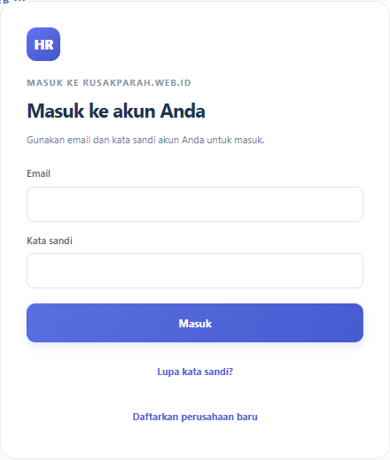
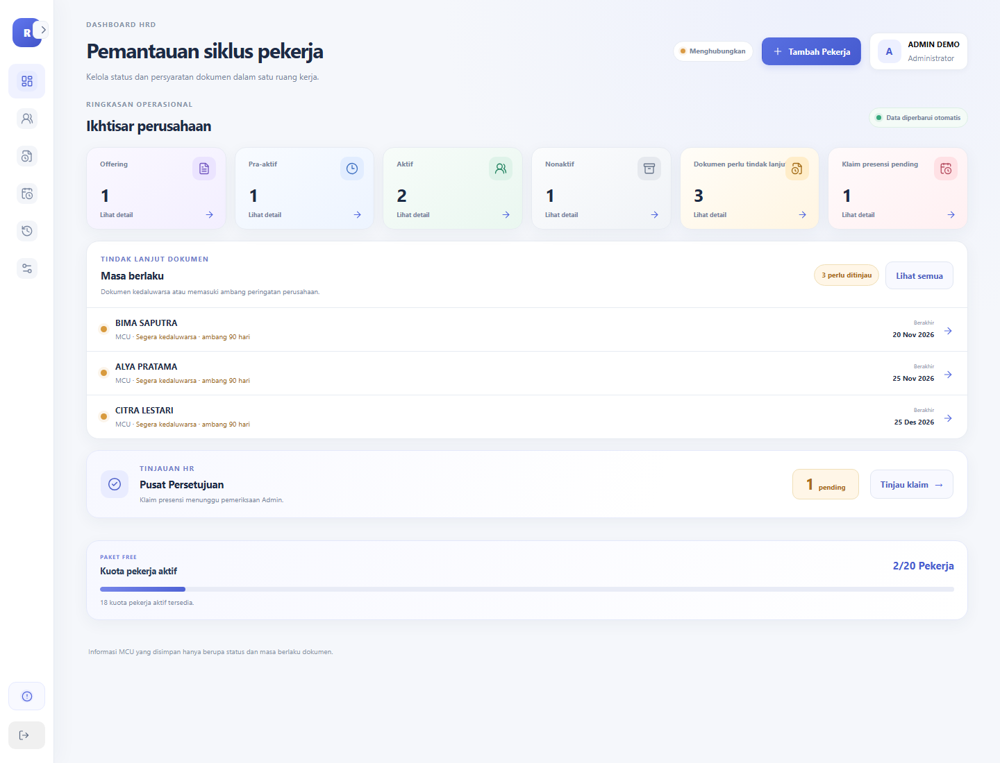
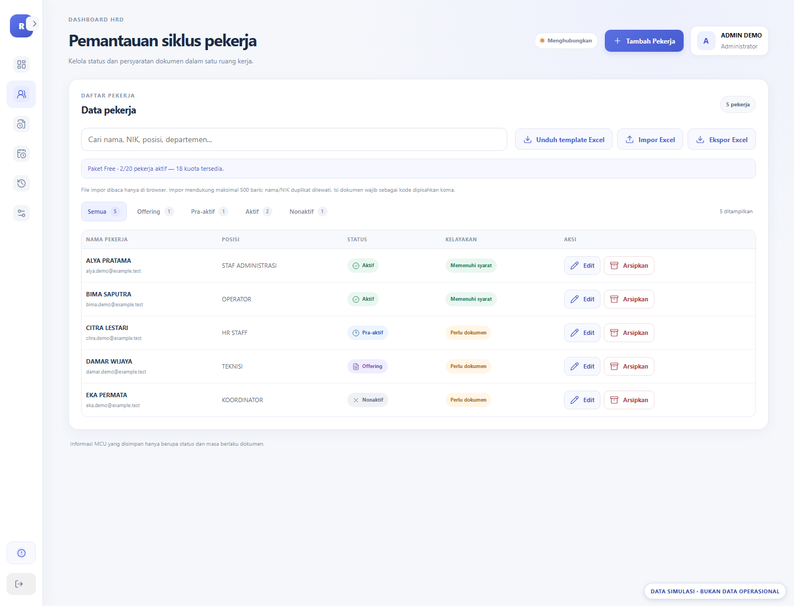
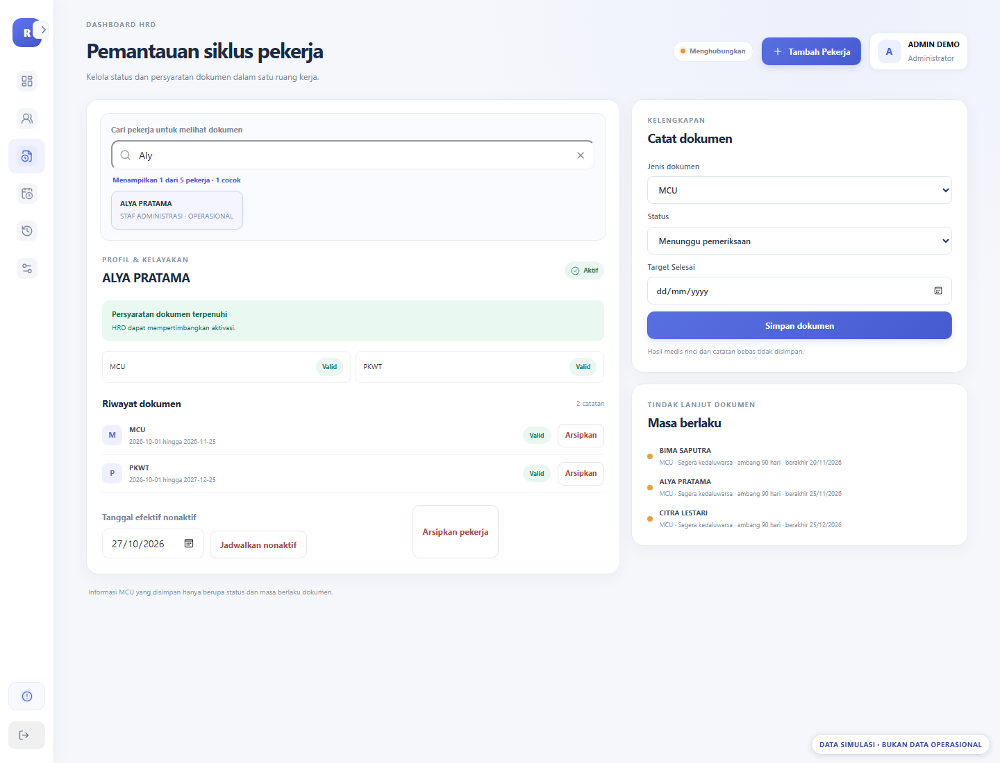
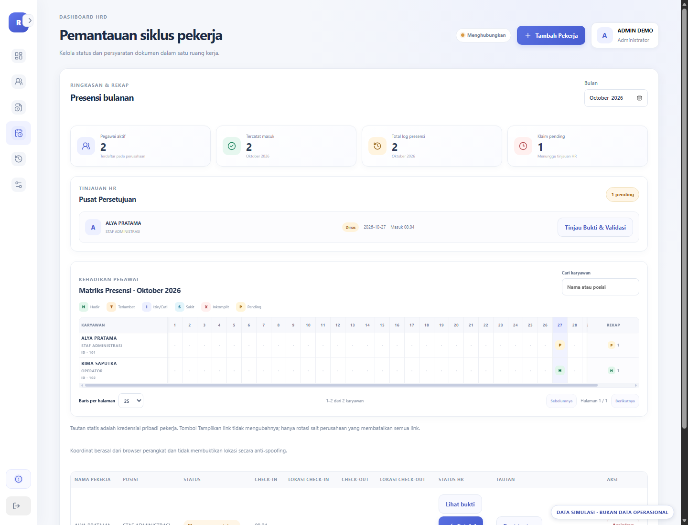
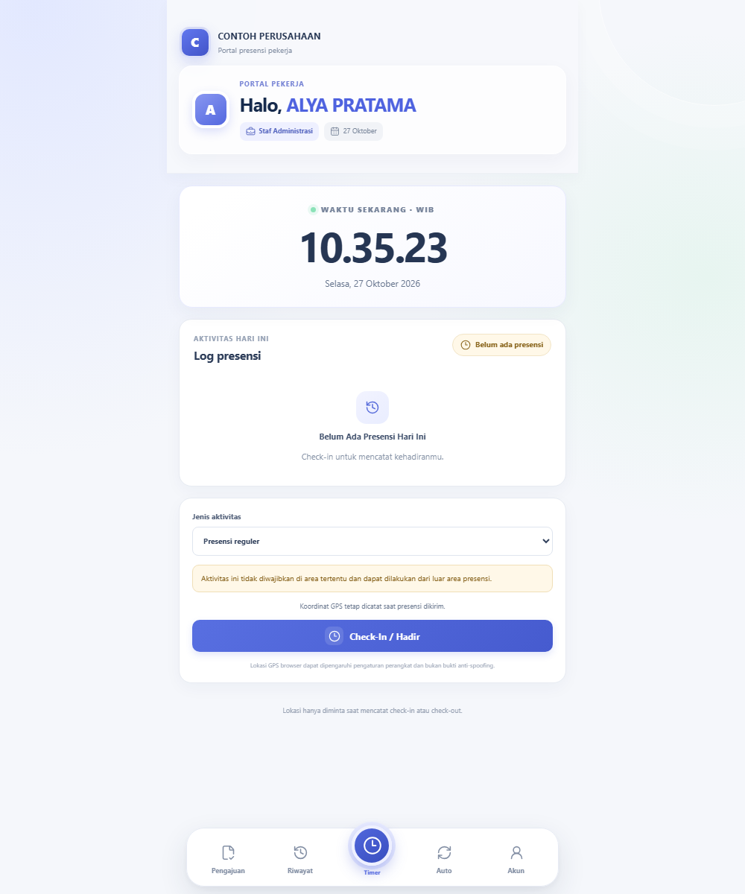
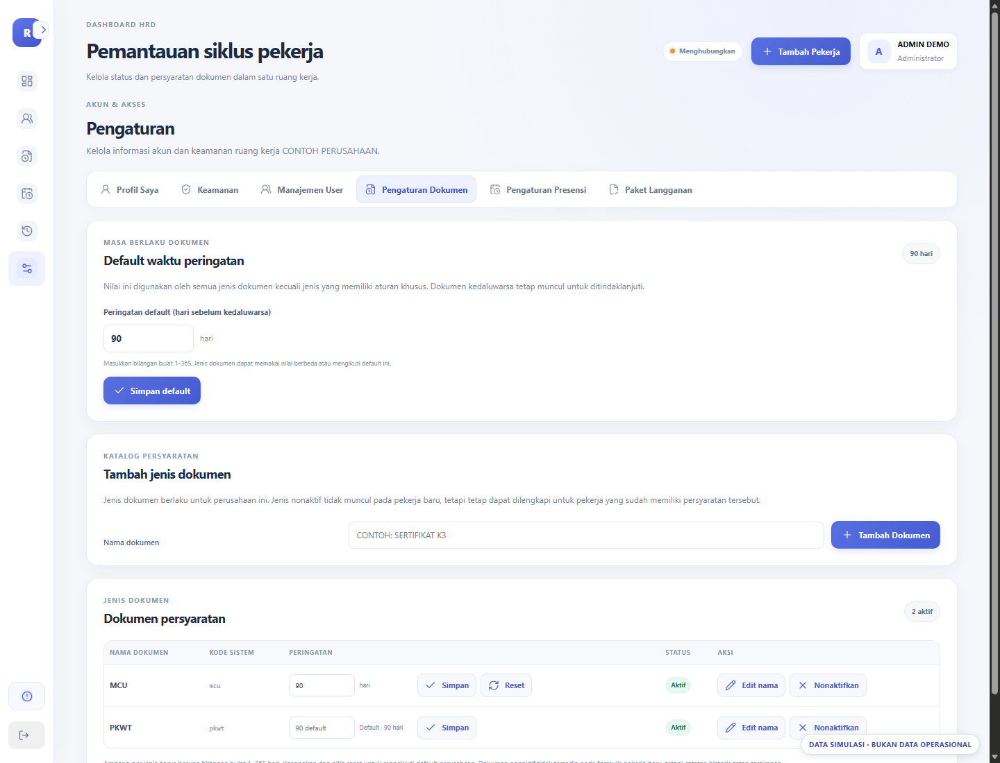

PANDUAN PENGGUNA · EDISI 1.0
Panduan praktis untuk mengelola perjalanan pekerja, dokumen ketenagakerjaan, dan presensi dalam satu aplikasi.
Untuk Admin, HR Staff, Viewer, dan pekerja yang menggunakan portal presensi. Panduan ini mengikuti fungsi aplikasi yang tersedia per 27 Oktober 2026.
MULAI MENGGUNAKAN APLIKASI
Aplikasi membantu perusahaan memantau proses pekerja setelah offering letter diterbitkan. Data perusahaan dipisahkan per tenant dan menu menyesuaikan peran akun.

Ringkasan · Data pekerja · Dokumen & masa berlaku · Presensi · Riwayat aktivitas · Pengaturan. Riwayat hanya tersedia untuk Admin dan HR Staff.
Landing page memiliki tautan Changelog untuk melihat pembaruan aplikasi. Isi dashboard operasional berasal dari data tenant yang sedang masuk, bukan angka ilustrasi landing page.
GAMBARAN OPERASIONAL
Ringkasan menampilkan status pekerja, dokumen mendekati atau melewati masa berlaku, serta antrean klaim presensi. Klik kartu untuk membuka daftar atau modul terkait.

Offering, Pra-aktif, Aktif, dan Nonaktif menunjukkan jumlah pekerja per tahap. Kartu dapat membuka Data pekerja dengan filter status terkait.
Dokumen perlu tindak lanjut menunjukkan dokumen kedaluwarsa/masuk ambang. Klaim presensi pending membuka Pusat Persetujuan. Widget mengambil data dari API tenant.
DATA PEKERJA
Catat pekerja setelah offering letter diterbitkan, lengkapi persyaratan, dan tinjau statusnya dari satu daftar.

Kelayakan merupakan rekomendasi sistem; perubahan status tetap dilakukan Admin. Aktivasi memerlukan dokumen wajib terbaru yang valid dan masih berlaku.
DOKUMEN & MASA BERLAKU
Gunakan profil dokumen untuk melihat persyaratan dan riwayat. Ambang pemantauan bersumber dari pengaturan perusahaan atau override per jenis dokumen.

Admin mengatur ambang default perusahaan 1–365 hari dan dapat memberi nilai khusus per jenis dokumen. Catatan terbaru per jenis menjadi acuan persyaratan.
TINJAUAN HR
Pilih bulan untuk melihat metrik, antrean pengajuan, dan matriks kehadiran. Klik sel tanggal pada matriks untuk menuju operasional harian.

HR Staff dan Viewer dapat membaca antrean; persetujuan hanya Admin.
Gunakan pencarian nama/posisi, pilihan 25/50/100 baris, pagination, dan scroll horizontal.
H Hadir T Terlambat I Izin/Cuti S Sakit X Inkomplit P Pending
PRESENSI PEKERJA

Aktivitas yang diwajibkan geofence harus berada dalam radius lokasi yang sesuai. Check-In Dinas meminta bukti foto dan menunggu persetujuan Admin.
PENGATURAN

Semua pengguna dapat mengubah nama/foto profil, memilih tema, serta mengganti kata sandi dengan verifikasi kata sandi lama. Kata sandi baru minimal 12 karakter.
Admin membuat dan mengelola katalog perusahaan. Ambang default 1–365 hari; nilai per jenis dapat mengikuti default atau menggunakan override sendiri.
Admin mengelola lokasi/geofence dan opsi Anti-Mock Location. Pastikan peta, radius, dan aktivitas yang diwajibkan sesuai kebijakan kerja.
Admin membuat akun Admin, HR Staff, atau Viewer. Buat akun seperlunya dan berikan peran dengan hak minimum yang dibutuhkan.
SIAPA DAPAT MELAKUKAN APA
| Fungsi | Admin | HR Staff | Viewer |
|---|---|---|---|
| Melihat dashboard dan data operasional tenant | Ya | Ya | Ya |
| Membuat pekerja dan mencatat dokumen | Ya | Ya | Tidak |
| Mengubah/mengarsipkan pekerja atau mengubah status | Ya | Tidak | Tidak |
| Membuat tautan presensi | Ya | Ya | Tidak |
| Setuju/tolak klaim dan mengelola pengaturan perusahaan | Ya | Tidak | Tidak |
| Riwayat aktivitas | Ya | Ya | Tidak |
| Profil dan keamanan akun sendiri | Ya | Ya | Ya |
Tangkapan layar internal dalam panduan ini menggunakan data fiktif dan diberi label “Data Simulasi”. Fitur/akses dapat berbeda sesuai versi aplikasi, konfigurasi perusahaan, dan role akun.